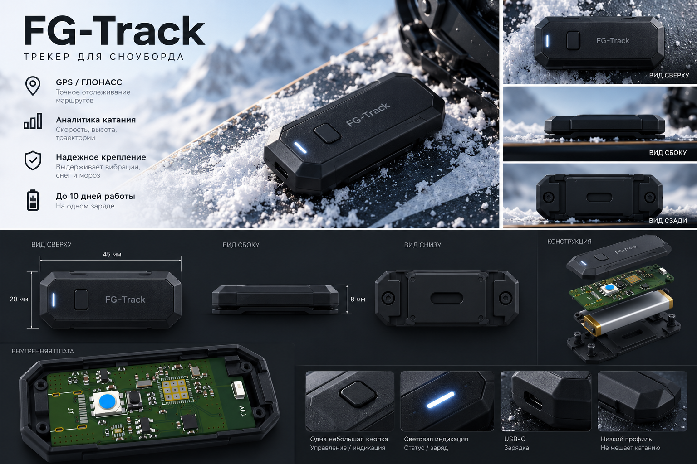

Измерения не по руке
Часы измеряют движение руки, а не сноуборда. Настоящее вращение доски остаётся за кадром.
Узнай, как ты катаешься.
Компактный трекер для сноуборда, который фиксирует движение доски и помогает анализировать прыжки, вращения и результаты тренировок. Закрепи датчик на сноуборде, подключи его к смартфону и получай данные о своём катании.Небольшой датчик. Больше информации о каждом заезде.
FG-Track устанавливается на доску и измеряет её ускорения и вращения. Данные передаются на смартфон по Bluetooth, чтобы вы могли изучить движение после тренировки.

Три звена одной системы. Никакого дополнительного оборудования на трассе.
IMU фиксирует ускорения и вращения доски.
Телеметрия передаётся на смартфон по BLE. Интеграция GPS телефона для записи маршрута планируется.
Приложение сохраняет сессии. Автоматическое определение прыжков и трюков ещё разрабатывается.
Обычный трекер знает, где вы были. FG-Track помогает понять, что произошло между отрывом и приземлением.
Часы измеряют движение руки, а не сноуборда. Настоящее вращение доски остаётся за кадром.
Время полёта, угол поворота и характер приземления - вместо ощущений и приблизительных оценок.
Ключевые параметры каждого заезда, от первого поворота до последнего приземления.
В приложении есть запись маршрута, скорости, дистанции и длительности тренировки через GPS смартфона.
Распознавание вращений до 720° с учётом направления frontside и backside.
Анализ времени полёта и параметров приземления.
Закрепи устройство на сноуборде в соответствии с инструкцией.
Соедини прототип с приложением через Bluetooth Low Energy.
Датчик собирает данные о движении доски во время заезда.
Открой сохранённую сессию и посмотри доступные показатели.
Смотри движения доски, а не только линии на карте.
Маршрут, скорость, прыжки и события собраны в одну сессию.
Выбери стойку и положение сенсора. FG-Track учитывает ориентацию датчика при измерениях.

Неважно, тренируешь первые 180° или работаешь над новым трюком. Важно понимать, что происходит на самом деле.

Коротко о том, как работает FG-Track.
Способ крепления для финальной версии ещё уточняется. Перед запуском мы покажем установку и результаты испытаний фиксации на доске.
Подтверждённой автономности для финальной версии пока нет. Опубликуем её после испытаний прототипа.
FG-Track - проект в разработке. Публикация в App Store и Google Play пока только запланирована. В скором времени выложим релиз приложения на гитхаб и в магазины приложений.
FG-Track создаётся для тех, кто хочет лучше понимать своё катание. Устройство находится на стадии разработки. Напиши команде, чтобы узнать о ходе разработки и будущем запуске.
Узнать о старте продаж